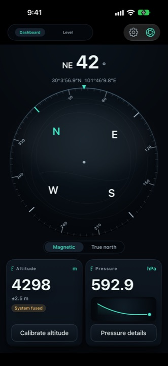
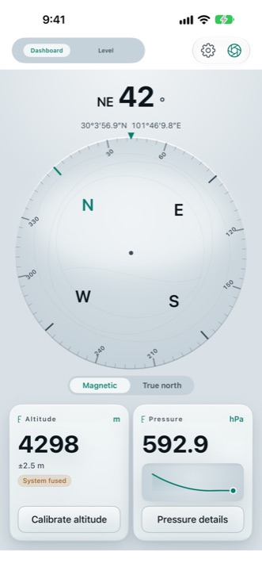
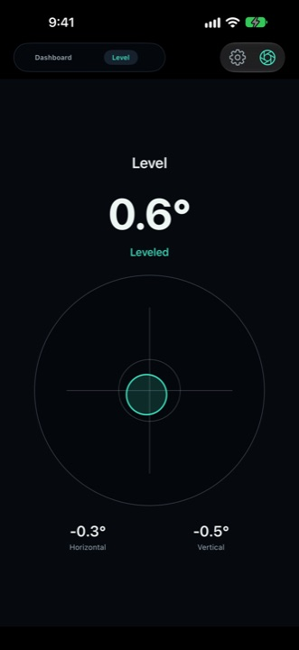
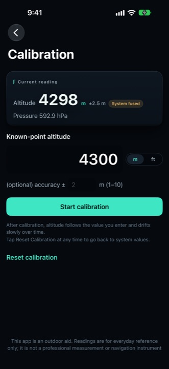
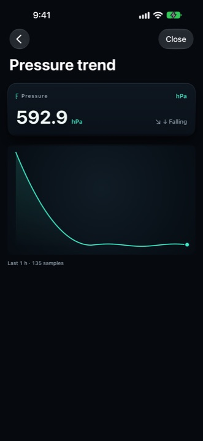

PeakGo
Open it and you have an outdoor dashboard
Altitude, pressure, compass and level on one screen. Every reading carries its error range and data source, and where a value cannot be trusted the app writes "--" instead of handing you a falsely precise number.
iPhone, iOS 17 or later. The first release is in App Store review — the download badge replaces this note the day it goes live. Get notified at support.
Free to download. No account, no ads, no data collection.
Four instruments, one screen
Altitude
GPS and barometric sources fused, metres / feet toggle, known-point calibration to pin the baseline.
Barometer
Live pressure, hPa / inHg / mmHg toggle, and a trend curve that shows the direction at a glance.
Compass
Magnetic / true north toggle, bearing, coordinates, figure-8 calibration guidance and magnetic interference warnings.
Level
Two-axis tilt — useful for aligning things when camping, setting up a tripod or hanging a picture.
Screens





Watermark camera
Stamp altitude, coordinates, time, heading and pressure onto a photo in one tap, with the fields you choose. Trip and summit records with no post-processing.
Free, and not funded by ads
Everything above is free permanently — it does not stop working without a subscription.
Optional subscription "PeakGo Yearly Support": the first year is free, then it renews yearly at the price the App Store shows in your region (CNY 1 per year in China). It buys the instruments and themes added later, and keeps this app alive without ads.
To cancel: iOS Settings → Apple ID → Subscriptions. Deleting the app does not cancel it.
Privacy is the default
- All readings are computed on device and never uploaded; no account, no cloud sync.
- No ad SDK, no third-party analytics, no tracking.
- Location, camera and motion permissions are used on device only; denying any one of them leaves the rest usable.
Availability and languages
iPhone, iOS 17 or later. Nine interface languages: English, Simplified Chinese, Traditional Chinese, Japanese, Korean, German, French, Spanish and Italian. The first release makes no iPad claim: landscape and multi-window layouts have not been verified screen by screen, so they are not listed as supported.